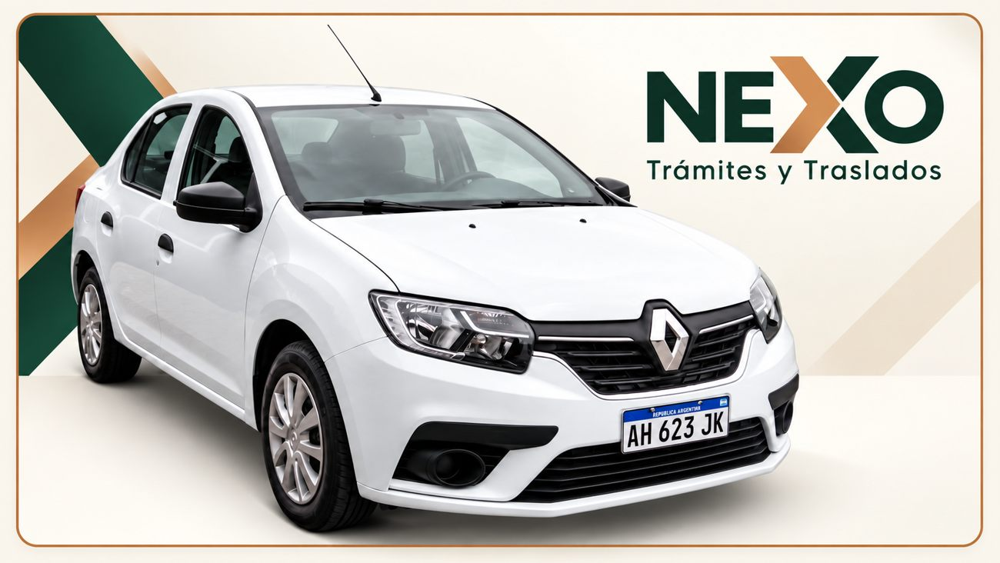
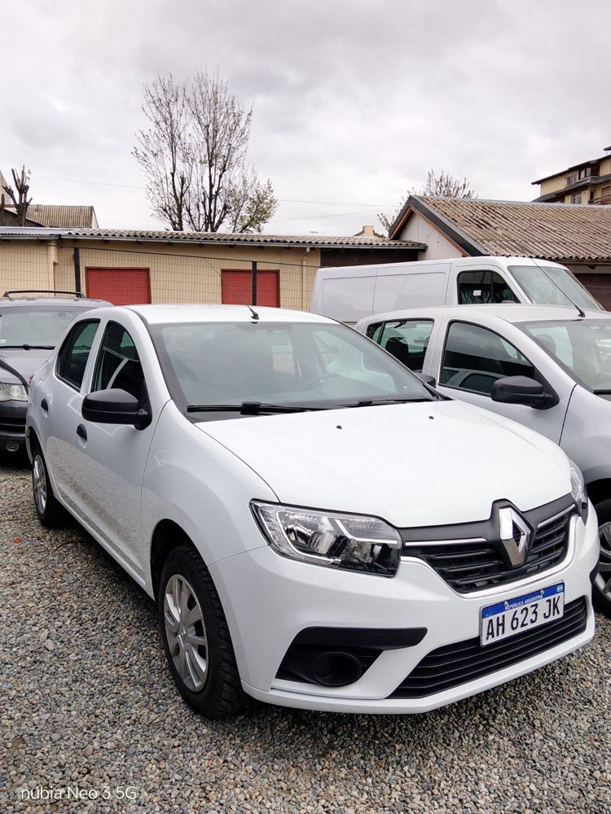

01 / TRASLADOS
Traslados privados
Aeropuerto, terminal, hoteles y viajes a medida. Coordinamos lugar, horario y equipaje.
Consultar traslado ↗Tu contacto en Bariloche para traslados a puntos turísticos y trámites. Atención cercana, sin complicaciones.

Para quienes llegan a Bariloche y para quienes necesitan gestionar algo en la ciudad.
Aeropuerto, terminal, hoteles y viajes a medida. Coordinamos lugar, horario y equipaje.
Consultar traslado ↗Te acercamos a miradores, puertos, bases de cerros y accesos a senderos. Las actividades son independientes.
Ver destinos ↗Gestiones, retiros, entregas y diligencias. Contanos lo que necesitás hacer.
Consultar gestión ↗Tocá una fotografía para conocer el destino y consultar el traslado.

Costa del Nahuel Huapi, península Llao Llao y miradores.
Ver fotos y acceso ↗.JPG/960px-Capilla_de_Colonia_Suiza_(Bariloche).JPG)
Villa entre montañas, con feria y gastronomía regional.
Ver fotos y acceso ↗.JPG/960px-Cerro_Catedral_(Bariloche).JPG)


Centro Cívico, costanera y rincones para fotos.
Ver fotos y acceso ↗
Puerto frente al hotel Llao Llao, salida de navegaciones de terceros.
Ver fotos y acceso ↗
Te acercamos a accesos vehiculares permitidos. Las caminatas a los refugios se hacen por cuenta propia.

Inicio de senda al refugio Frey y laguna Toncek.
Ver fotos y acceso ↗
Camino a pie hacia un refugio con vistas al lago Moreno.
Ver fotos y acceso ↗.jpg?width=960)
Sendero largo al refugio San Martín junto a laguna Jakob.
Ver fotos y acceso ↗
Sendero por arroyo Goye hacia refugio Italia y Laguna Negra.
Ver fotos y acceso ↗Traslado, destino o trámite: contanos qué necesitás.
Fecha, lugar, cantidad de pasajeros o tipo de gestión.
Te respondemos con disponibilidad y precio a convenir.
Mostramos una fotografía auténtica de nuestro Renault Logan blanco. Nada de autos inventados ni imágenes de catálogo.

Sin precios sorpresa: consultanos el valor y las condiciones antes de confirmar.
Depende del recorrido, horario y cantidad de pasajeros. Te confirmamos el precio por WhatsApp antes de coordinar.
Podés pedir un traslado desde o hacia el aeropuerto de Bariloche, sujeto a disponibilidad y habilitaciones correspondientes.
No. No. Solo ofrecemos traslados; las entradas y actividades se contratan por separado.
Sí. Escribinos qué necesitás y vemos si podemos realizar o coordinar esa gestión. No ofrecemos representación profesional o registral sin la habilitación que corresponda.
Hasta cuatro pasajeros, dependiendo del equipaje y los requisitos de seguridad. Contanos cuántos son antes de reservar.
Completá los datos y preparamos tu mensaje. No se envía nada hasta que lo confirmes en WhatsApp.